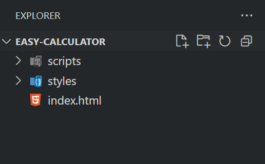

Voor deze rekenmachine gebruiken we deze drie codetalen:
- HTML
- CSS
- JavaScript
Wat zijn HTML, CSS en JavaScript?
HTML (HyperText Markup Language) zorgt voor de structuur van een webpagina. Denk hierbij aan kopjes, tekstvakken, knoppen en afbeeldingen.
CSS (Cascading Style Sheets) bepaalt hoe de pagina eruitziet. Met CSS kun je kleuren, lettertypes, marges en layout instellen, zodat alles er mooi uitziet.
JavaScript maakt je pagina interactief. Dankzij JavaScript kunnen gebruikers bijvoorbeeld rekenen met je rekenmachine, knoppen indrukken of gegevens invoeren.
Door deze drie technologieën samen te gebruiken, bouwen we een mooie en werkende rekenmachine!
STAP 1 - Codeprogramma downloaden
Om deze rekenmachine te coderen gebruiken we het programma Visual Studio Code.
STAP 2 - Mappenstructuur
Op je bureaublad maak je een nieuwe map aan met de naam calculator.
STAP 3 - Openen van Visual Studio Code en bestandenstructuur aanmaken
Open het programma Visual Studio Code en open via 'Open Folder' de map die je net hebt aangemaakt.

Daarna bouw je onderstaande mappen- en bestandenstructuur zoals te zien is in deze screenshot: